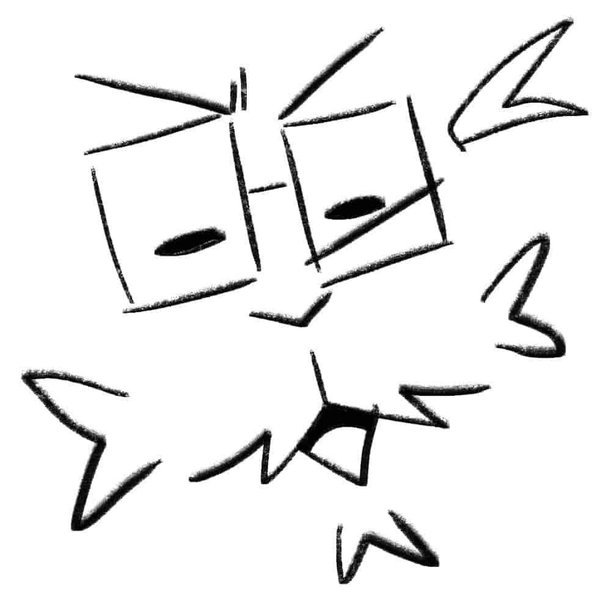

Learn more about me!

I am Poprou, a Filipino digital illustrator who blends contemporary digital art with Filipino culture, mythology, and identity. My work focuses on reimagining local narratives through bold compositions and expressive visual storytelling, creating pieces that feel both modern and deeply rooted in tradition.
Through my illustrations, I aim to bridge generations, bringing ancestral stories into present-day conversations while exploring themes of identity, belonging, and cultural pride. Inspired by folklore, indigenous symbolism, and everyday Filipino life, I use dynamic color, stylized forms, and layered compositions to create immersive visual narratives that honor heritage while embracing innovation.